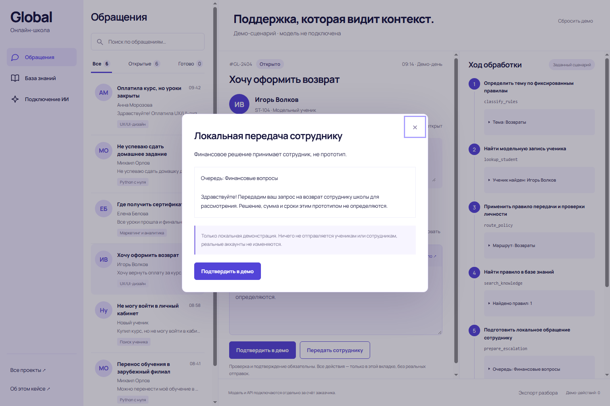
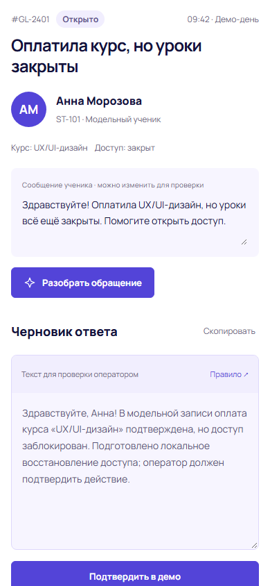

Проверить контекст
Найти ученика, проверить оплату, доступ или условия сертификата. Нет записи — запросить уточнение, а не менять аккаунт наугад.
Прототип ИИ-агента поддержки онлайн-школы. Обращение ученика превращается в проверяемый разбор, черновик ответа и действие с подтверждением оператора.
Попробовать прототип ↗
Найти ученика, проверить оплату, доступ или условия сертификата. Нет записи — запросить уточнение, а не менять аккаунт наугад.
Поиск в модельной базе знаний, точная цитата и результаты каждого инструмента. Текст обращения не превращается в команды.
Редактируемый ответ и отдельное подтверждение. Возвраты и вопросы без проверенного ответа передаются сотруднику только в локальном демо.

Шесть сценариев: доступ, домашняя работа, сертификат, возврат, неизвестный ученик и вопрос без ответа в базе. Предпросмотр не выполняет действие; отмена ничего не меняет.
Повторное подтверждение не создаёт дубликат. Журнал и экспорт JSON показывают фактические шаги, выбранный маршрут и ответ оператора.

Настоящие ученики, LMS, почта и платежи не подключены. Нет реальных отправок, решений о возврате денег и изменений аккаунтов. Эффективность на реальной школе не измерялась.
Прототип показывает интерфейс, инструменты и контроль действий, но не выдаёт фиксированный сценарий за автономный ИИ. Для рабочего агента отдельно подключаются серверный адаптер модели, данные школы и каналы общения; затем проводится тестирование. Модель и API оплачивает заказчик. Ключи остаются на сервере, финансовые решения — у сотрудника.